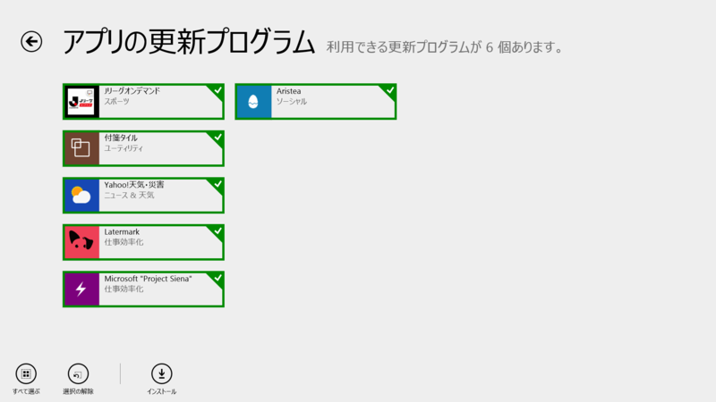
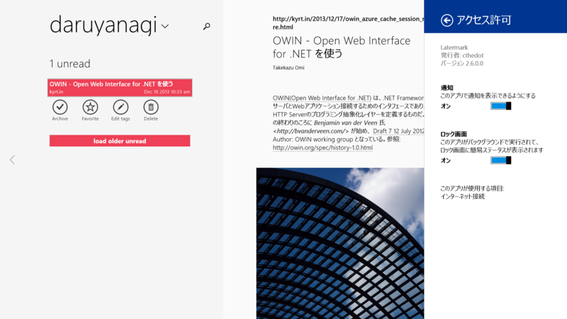
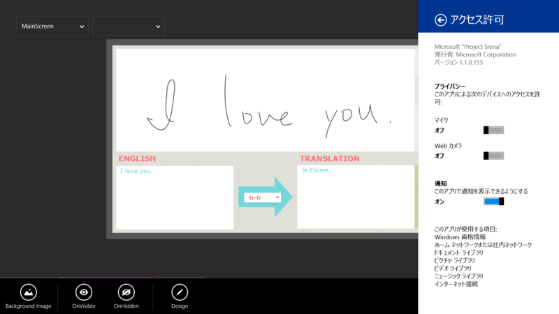
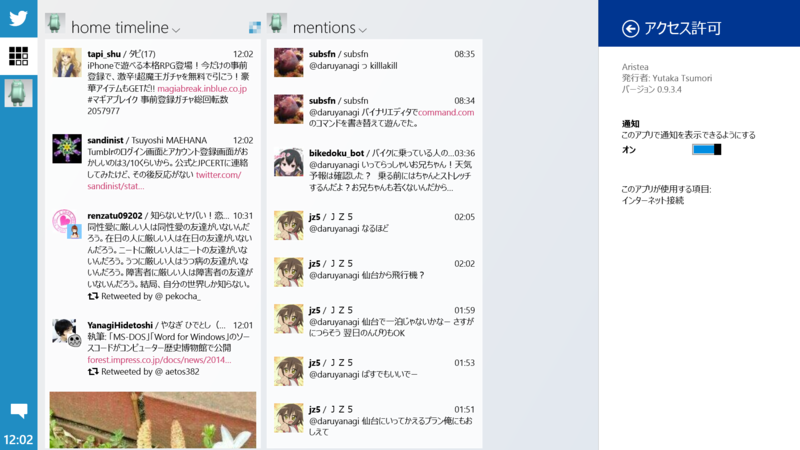

付箋タイル 1.2.5.3、Latermark 2.6.0.0、Microsoft "Project Siena" 1.1.0.155、Aristea 0.9.3.4
執筆日時：

Latermark 2.6.0.0

v2.6
- enable Settings/Permissions/Notifications for unobtrusive error messages which do not block the UI
- multi-edit, select "Edit Lists" from bottom appbar
- right click (or hold on touch device) on item for edit without viewing article
- share selected text from Latermark to e.g. a translation app (Language Translator works)
- improved sync of offline actions, failed ones can be retried or deleted manually now
- changed some keyboard shortcuts, press "?" for details
- added open in Latermark options for snapped/small screens
- added option how many items are sync at any time (select less for slower hardware/network, default is 100)
- added new style option to change between paragraphs being "book-like" indented (default) or separated by empty line
- improved tag filter layer in "snapped" mode
- fixed after deletion of items count of list not updated if list empty
- fixed deleting items from search results
- major refactoring and bugfixing
Microsoft "Project Siena" 1.1.0.155

- Quick start: create an app by merely selecting a folder full of images
- Add translate, search, speak, and social network connections to any app
- Easily and securely read and update to SaaS and IT-created services
- Enrich apps with YouTube videos
- New Function Explorer
Aristea 0.9.3.4

- 画像をダブルタップすると大きく表示できるようにしました
- 細かい見た目を修正しました
- 一部のローカライズを修正しました
- 共有コントラクトに対応しました
- URLを含む文字数の計算を修正しました
- ユーザ情報を表示できるようにしました
- 細かい使いやすさを向上しました
- アプリがクラッシュする不具合を修正しました
- その他細かい不具合を修正しました